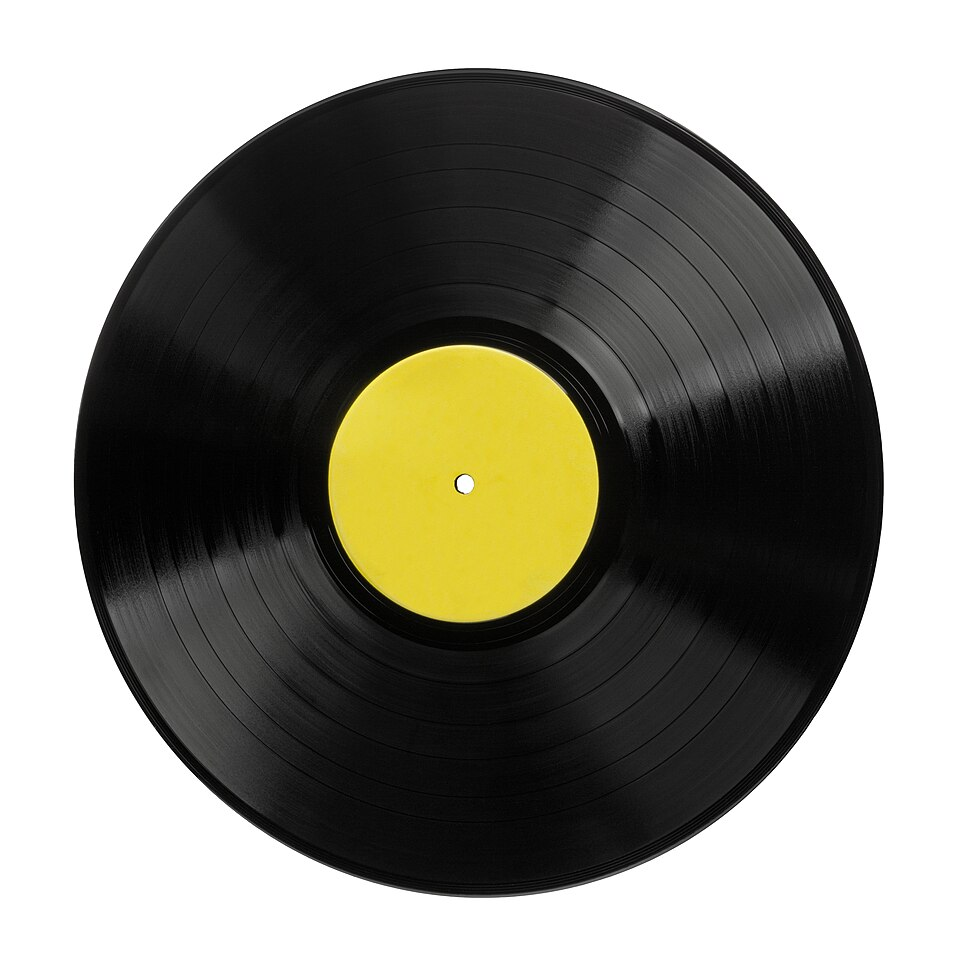
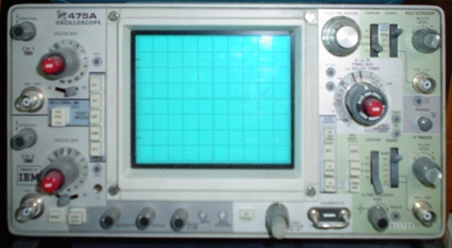

LP의 홈은 끊김 없는 물결 — 아날로그

파형을 충분히 자주 찍으면 — 원본을 되살립니다
소리는 공기의 떨림입니다. 빛도, 영상도 — 모두 끊김 없는 물결입니다. 이것을 어떻게 0과 1로 바꿀까요. 답은 의외로 간단합니다 — 점으로 찍습니다.
CD가 1초에 44,100번 소리를 찍는 이유 — 사람 귀가 듣는 가장 높은 음(20kHz)의 두 배보다 살짝 위입니다. 그래서 LP의 따뜻함을 잃지 않고도 — CD가 비트 위로 옮겨졌습니다.